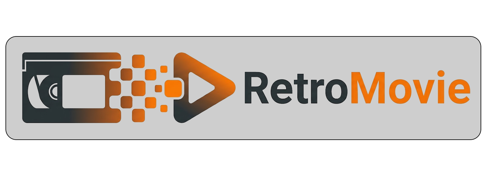

Ne laissez pas vos plus beaux souvenirs s'effacer avec le temps. Vos mariages, premiers pas et fêtes de famille méritent de briller à nouveau. Chez RetroMovie, nous transformons vos anciennes cassettes VHS en fichiers HD de haute qualité, pour que vous puissiez redécouvrir et partager ces moments précieux avec vos proches, dès aujourd'hui et pour les générations à venir.
Découvrir nos servicesTransfert de vos cassettes VHS, VHS-C et Hi8 vers clé USB ou lien de téléchargement.
Amélioration du grain d'image et correction sonore pour une expérience optimale.
Nous créons un film résumé avec vos plus beaux moments et une musique de fond.
Par cassette numérisée
Format MP4 HD
Jusqu'à 10 cassettes
Clé USB offerte
Plus de 20 cassettes
Montage inclus
1. Envoyez vos cassettes : Préparez votre colis et envoyez-le nous en toute sécurité.
2. Numérisation : Nous traitons vos vidéos avec du matériel professionnel.
3. Recevez vos fichiers : Récupérez vos souvenirs par mail ou sur support physique.